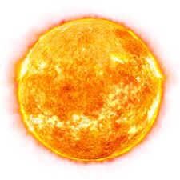
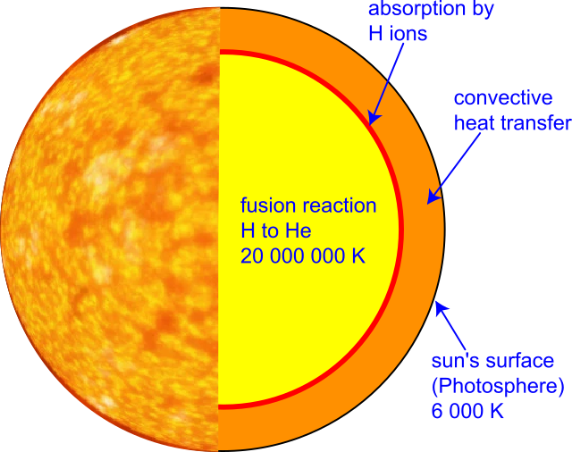

The sun is a yellow dwarf star, a hot ball of glowing gases, at the heart of our solar system, it is also the source of heat for the earth, and is also the largest object in our solar system, making up 99.8% of our solar system’s mass. It’s influence extends far beyond the orbits of planets as far as Neptune and Pluto. Without the Sun’s intense energy and heat, there would be no life on Earth. The sun being a mixture of gases is held together by it’s own gravity.

Nuclear fusion at the core
At the core of the Sun, gravitational attraction produces immense pressure and temperature, which can reach more than million degrees Celsius, and more than 6,000 degrees Celsius at the surface. Hydrogen atoms get compressed and fuse together to create Helium. Nuclear fusion produces great amounts of energy. The energy radiates outward to the sun’s surface, atmosphere and beyond. From the core, energy moves to the radiative zone, where it bounces around for up to millions of years before moving up to the connective zone, the upper layer of the sun’s interior.

Size and Distance
The Sun has a radius of 432,168.6 miles, and it is not an especially large star as there are many others that are several times bigger, scattered across the galaxy, but it is still far more massive than our home planet: it would take 332,946 Earths to match the mass of the Sun. The Earth orbits the Sun from a distance of about 93 million miles. The connection and interactions between the Sun and Earth drive our planet’s seasons, ocean currents, weather, climate, radiation belts, and aurorae. Though it is special to us, there are billions of stars like our Sun scattered across the Milky Way galaxy.
Orbit and Rotation
The Sun, and everything that orbits it, including our planet, Earth, is located in the Milky Way galaxy. Our solar system is moving at an average velocity of 450,000 miles per hour. But even at this speed, it takes us about 230 million years to make one complete orbit around the Milky Way.
The Sun rotates as it orbits the center of the Milky Way. Its spin has an axial tilt of 7.25 degrees with respect to the plane of the planets’ orbits. Since the Sun is not a solid body, different parts of the Sun rotates at different rates.
Atmosphere
Above the Sun’s atmosphere are the tenuous chromosphere and the corona (crown), which make up the thin solar atmosphere. This is where we see features such as sunspots and solar flares.
Visible light from these top regions is usually too weak to be seen against the brighter photosphere, but during total solar eclipses, when the Moon covers the photosphere, the chromosphere looks like a red rim around the Sun, while the corona forms a beautiful white crown with plasma streamers narrowing outwards, forming shapes that look like flower petals.
Exploring the Sun
Parker Solar Probe will travel through the Sun’s atmosphere — closer to the surface than any spacecraft before it — providing humanity with the closest-ever observations of a star.